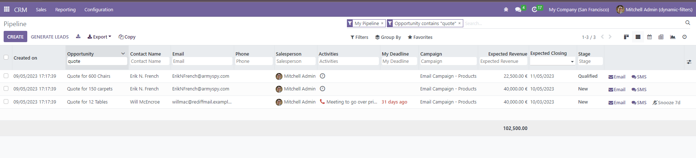
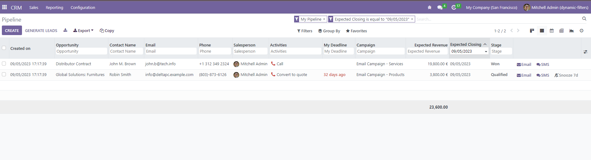

How Does It Work?
The Ultimate List View module for Odoo enhances the user experience by providing an intuitive way to filter and manage records in the list view. Below is a step-by-step overview of how this module works:
Applying Filters
Date Field: For date fields, select the desired date using the Date Picker in the header. To remove the date field filter, clear the facet of the date field from the parent search bar.

Other Fields: non-date fields, simply type the text you want to search for and press enter. To remove the filter, press the backspace button.

Why Choose Ultimate List View?
Incorporating the Ultimate List View module into Odoo elevates the efficiency and usability of list views. This powerful tool simplifies the process of refining records, making data management a breeze. The added export options and copy functionality further enhance user capabilities, ensuring a seamless and intuitive experience. With this module, Odoo users can expect a significant boost in productivity and a more streamlined workflow.
Contact Us
Zehntech Technologies (https://www.zehntech.com/erp-crm/odoo-services/)